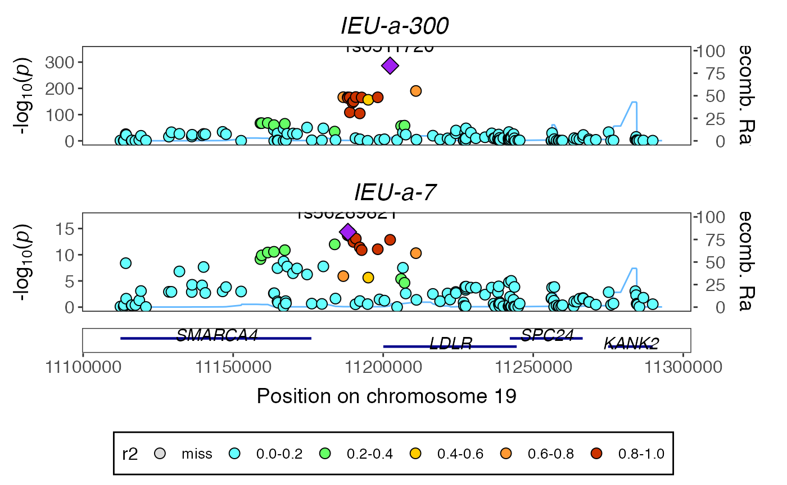

Here we’ll perform colocalisation analysis for a particular region, and plot the regions as well. We’ll do the same analysis two ways:
- querying the association data from the IEU GWAS database, and
- downloading the GWAS VCF files and querying those.
We’ll use the example of LDL cholesterol ieu-a-300 and coronary heart disease ieu-a-7.
Load libraries:
suppressPackageStartupMessages(suppressWarnings({ library(gwasglue) library(dplyr) library(gassocplot) library(coloc) })) #> API: public: http://gwas-api.mrcieu.ac.uk/
ieugwasr
First find a region that we know to be associated with LDL cholesterol.
top <- ieugwasr::tophits('ieu-a-300') %>% arrange(p) top #> # A tibble: 81 x 12 #> beta position se p chr n id rsid ea nea eaf #> <dbl> <int> <dbl> <dbl> <chr> <int> <chr> <chr> <chr> <chr> <dbl> #> 1 -0.150 1.10e8 0.0047 1.00e-200 1 172825 ieu-… rs49… T C 0.187 #> 2 -0.221 1.12e7 0.0061 1.00e-200 19 170608 ieu-… rs65… T G 0.0976 #> 3 -0.485 4.54e7 0.0119 1.00e-200 19 139198 ieu-… rs72… A G 0.0317 #> 4 0.119 2.13e7 0.004 9.48e-183 2 173007 ieu-… rs13… A G 0.288 #> 5 -0.497 5.55e7 0.018 8.57e-143 1 77417 ieu-… rs11… T G 0.0172 #> 6 -0.446 4.54e7 0.0183 2.99e-122 19 99409 ieu-… rs12… A G 0.0172 #> 7 -0.0806 4.41e7 0.0041 4.84e- 83 2 172940 ieu-… rs65… C T 0.706 #> 8 0.0733 7.47e7 0.0038 7.79e- 78 5 168357 ieu-… rs12… C T 0.431 #> 9 -0.189 4.52e7 0.0112 7.29e- 62 19 170260 ieu-… rs29… C T 0.0211 #> 10 -0.0564 1.26e8 0.0036 2.10e- 50 8 172963 ieu-… rs29… T A 0.468 #> # … with 71 more rows, and 1 more variable: trait <chr>
Choose the best signal and create a range
chrpos <- paste0(top$chr[1], ":", top$position[1] - 90000, "-", top$position[1] + 90000) chrpos #> [1] "1:109724880-109904880"
Extract, harmonise and format the data
out <- ieugwasr_to_coloc(id1='ieu-a-300', id2='ieu-a-7', chrompos=chrpos)
Run colocalisation analysis
res <- coloc::coloc.abf(out[[1]], out[[2]]) #> Warning in sdY.est(d$varbeta, d$MAF, d$N): estimating sdY from maf and varbeta, #> please directly supply sdY if known #> PP.H0.abf PP.H1.abf PP.H2.abf PP.H3.abf PP.H4.abf #> 1.31e-304 1.29e-19 3.67e-288 2.61e-03 9.97e-01 #> [1] "PP abf for shared variant: 99.7%"
Plot
temp <- coloc_to_gassocplot(out) #> Extracting LD matrix for 253 variants #> Please look at vignettes for options on running this locally if you need to run many instances of this command. #> Warning in ieugwasr::ld_matrix(markers[["marker"]], with_alleles = FALSE, : The following variants are not present in the LD reference panel #> rs114570757 #> rs115867281 #> rs116711509 #> rs3850615 #> rs41279710 #> rs41279722 #> rs6683212 #> Found 246 variants in LD reference panel gassocplot::stack_assoc_plot(temp$markers, temp$z, temp$corr, traits=temp$traits)

#> TableGrob (2 x 1) "arrange": 2 grobs
#> z cells name grob
#> 1 1 (1-1,1-1) arrange gtable[layout]
#> 2 2 (2-2,1-1) arrange gtable[guide-box]gwasvcf
Let’s do the same with the vcf files (and the indexes). Download from here:
- https://gwas.mrcieu.ac.uk/files/ieu-a-300/ieu-a-300.vcf.gz
- https://gwas.mrcieu.ac.uk/files/ieu-a-300/ieu-a-300.vcf.gz.tbi
- https://gwas.mrcieu.ac.uk/files/ieu-a-7/ieu-a-7.vcf.gz
- https://gwas.mrcieu.ac.uk/files/ieu-a-7/ieu-a-7.vcf.gz.tbi
Set a region to plot:
chrpos <- "19:11112306-11292306"
Extract region from vcf files and convert to coloc object
vout <- gwasvcf_to_coloc("ieu-a-300.vcf.gz", "ieu-a-7.vcf.gz", chrpos) #> 'tools_bcftools' option is not set, using native read which may be substantially slower. See 'set_bcftools' for information. #> 'tools_bcftools' option is not set, using native read which may be substantially slower. See 'set_bcftools' for information.
Run colocalisation analysis
vres <- coloc::coloc.abf(vout[[1]], vout[[2]]) #> Warning in sdY.est(d$varbeta, d$MAF, d$N): estimating sdY from maf and varbeta, #> please directly supply sdY if known #> Warning in sdY.est(d$varbeta, d$MAF, d$N): estimating sdY from maf and varbeta, #> please directly supply sdY if known #> PP.H0.abf PP.H1.abf PP.H2.abf PP.H3.abf PP.H4.abf #> 3.85e-289 3.38e-10 7.35e-281 6.35e-02 9.36e-01 #> [1] "PP abf for shared variant: 93.6%"
Plot
library(gassocplot) temp <- coloc_to_gassocplot(vout) #> Extracting LD matrix for 148 variants #> Please look at vignettes for options on running this locally if you need to run many instances of this command. #> Warning in ieugwasr::ld_matrix(markers[["marker"]], with_alleles = FALSE, : The following variants are not present in the LD reference panel #> rs8110695 #> rs2738459 #> rs17001200 #> Found 145 variants in LD reference panel gassocplot::stack_assoc_plot(temp$markers, temp$z, temp$corr, traits=temp$traits)

#> TableGrob (2 x 1) "arrange": 2 grobs
#> z cells name grob
#> 1 1 (1-1,1-1) arrange gtable[layout]
#> 2 2 (2-2,1-1) arrange gtable[guide-box]